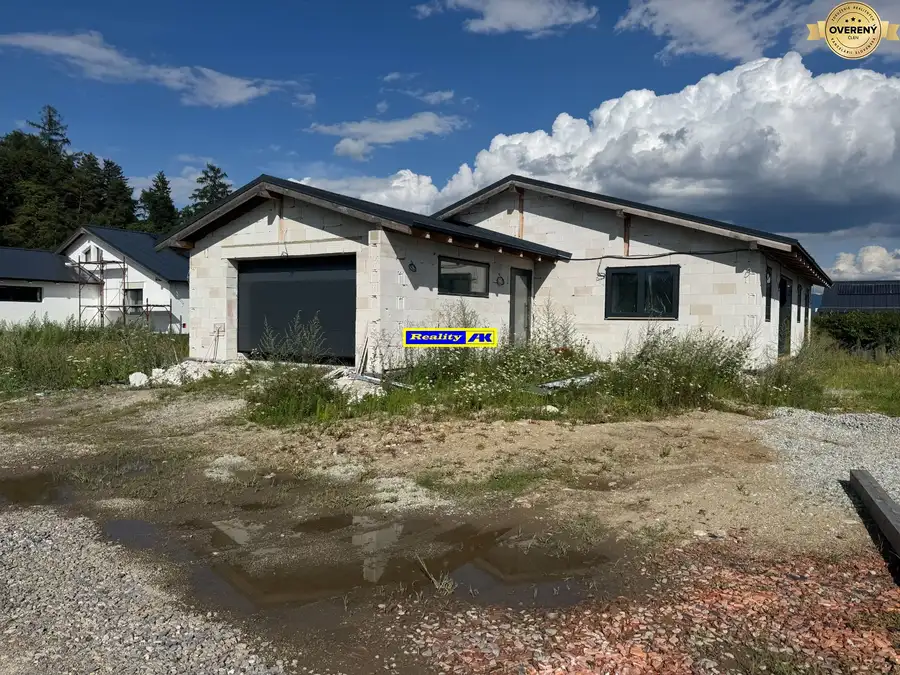
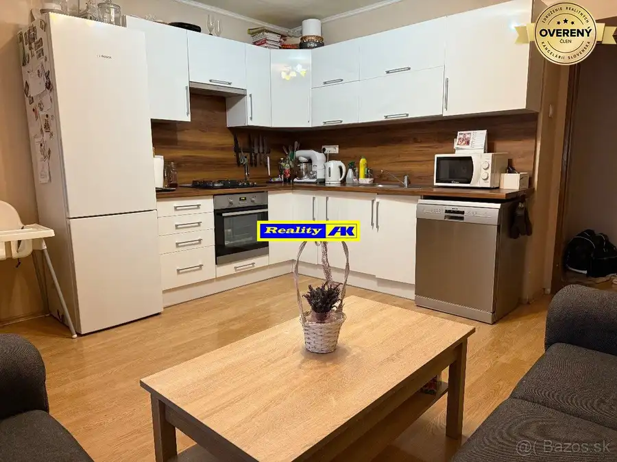
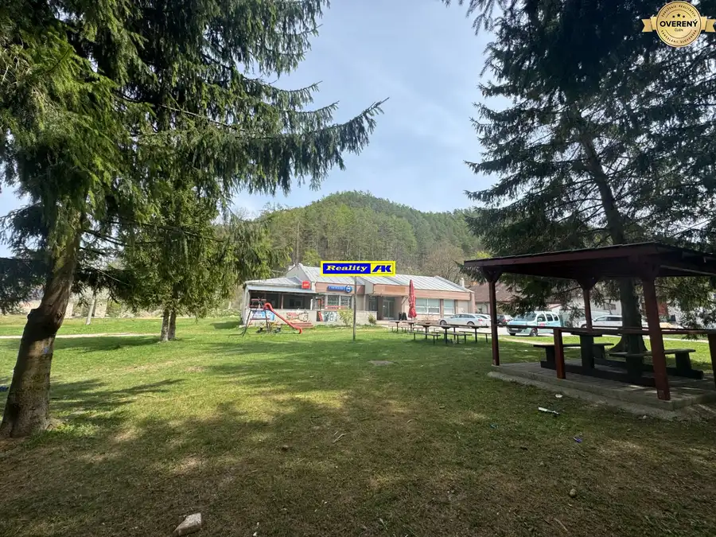

Rekreačná zrubová chata na predaj - Zázrivá
Zázrivá
- Dispozícia4-izbový
- Plocha95 m²
- Poschodie0. z 2
- Stavúplne prerobený
O nehnuteľnosti
Ponúkame na predaj štýlovú rekreačnú zrubovú chatu situovanú v nádhernom horskom prostredí obce Zázrivá. Nehnuteľnosť sa nachádza na slnečnom, južne orientovanom svahu, ktorý poskytuje úchvatné panoramatické výhľady na okolitú prírodu a zabezpečuje maximálne súkromie a pokoj.
Chata je postavená na pozemku o výmere 653 m², so zastavanou plochou 60 m² a celkovou úžitkovou plochou až 95 m². Kolaudácia prebehla v roku 2012.
Dispozícia:
* Prízemie: vstupná chodba, priestranná terasa, obývacia izba prepojená s kuchyňou, špajza, kúpeľňa s WC
* Poschodie: 3 samostatné izby, kúpeľňa s toaletou, výlez do podkrovia
* Podkrovie: možnosť dobudovania ďalšieho obytného priestoru
Interiér je zariadený vo vyššom štandarde s dôrazom na kvalitu a prírodné materiály. Nábytok aj kuchynská linka sú vyrobené z masívu, podlahy sú drevené. Okná majú trojsklo a 8-komorový profil, čo zabezpečuje výborné tepelnoizolačné vlastnosti.
Technické vybavenie:
* vykurovanie elektrickými radiátormi + krb s prieduchmi do celého objektu
* ohrev teplej vody zabezpečený bojlerom
* napojenie na elektrinu, vodu a kanalizáciu
* objekt je zabezpečený kamerovým systémom
Chata sa predáva kompletne zariadená a pripravená na okamžité užívanie.
Možnosť prenájmu ! Developer ktorý realizoval výstavbu zabezpečuje v tejto lokalite krátkodobý prenájom nehnuteľností, teda aj komplexnú starostlivosť vrátane odovzdania objektu, prezliekania bielizne , upratovacie služby a pod.
Exteriér a doplnky:
Na pozemku sa nachádza altánok a garáž s elektricky ovládanou sekčnou bránou. Dažďová voda je zachytávaná do zbernej nádrže (5 m³), ktorá slúži na zavlažovanie a technické využitie.
Lokalita:
Zázrivá je vyhľadávaná rekreačná oblasť s množstvom možností na turistiku, cykloturistiku a oddych v prírode. V blízkosti sa nachádza obec Terchová s bohatým kultúrnym a spoločenským vyžitím. Lokalita je určená najmä na rekreačné účely, čo zaručuje pokojné prostredie bez rušivých vplyvov.
Výhody:
* možnosť krátkodobého prenájmu
* výnimočná poloha a výhľad
* kvalitná zrubová stavba
* kompletné zariadenie v cene
* možnosť ďalšieho rozšírenia podkrovia
* výborná dostupnosť a občianska vybavenosť v okolí.
Parametre
| Rozloha pozemku | 683 m² |
|---|---|
| Zastavaná plocha | 60 m² |
| Celková rozloha | 653 m² |
| Úžitková plocha | 95 m² |
| Poschodie | prízemie |
| Počet poschodí | 2 |
| Počet izieb | 4 |
| Stav | úplne prerobený |
| Voda | verejný vodovod |
| El. napätie | 230/400V |
| Plyn | nie |
| Kanalizácia | áno |
| Vykurovanie | áno |
| Pivnica | nie |
| Garáž | áno - 1 auto |
| Parkovanie | vlastné vyhradené |
| Postavené z | drevostavba |
| Zariadenie | zariadený |
| Krb | áno |
| Energetický certifikát | nie |
| Terén | svahovitý |
| Prístupová cesta | betónová cesta |
| Dátum zverejnenia | 2. 5. 2026 |
Kde to je
Mohlo by Vás zaujímať

Rodinné domy10 Cena dohodouRodinný dom Valča, novostavba v štádiu holodomu Martin 4-izbový205 m² sa nachádza v pokojnej časti na periférii obce v smere na sloviansku dolinu. Leží na rovinatom pozemku s rozlohou 850m2. Pozostáva z vstupnej chodby,…
Byt10 135 000 €2 izbový byt na predaj, zrekonštruovaný Vrútky Vrútky 2-izbový61 m²2. podlažie Ponúkame Vám 2 izbový zrekonštruovaný byt na predaj meste Vrútky. Byt sa nachádza na 2. poschodí z 2. bytového domu, ktorý rovnako ako byt prešiel…
Nebytové priestory10 390 000 €Pohostinstvo na predaj s veľkým pozemkom pri Jasenskej doline - Martin Martin 480 m² Skopírujte si link na video: https://www.youtube.com/shorts/NI_b-t8oBCc Ponúkame na predaj objekt pohostinstva situovaný v obci Necpaly, v…